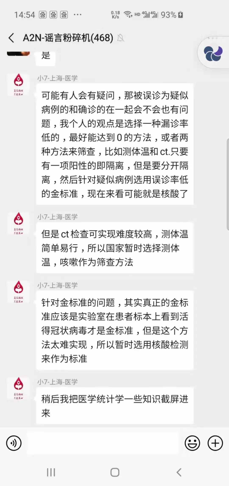
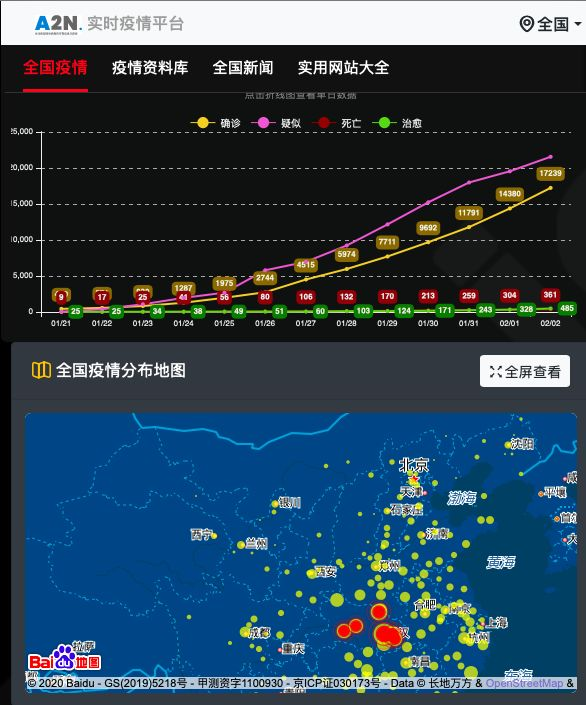

疫情之下，在家办公靠谱吗？
原文链接 备份链接 燃财经（ID:rancaijing）原创 作者 | 金玙璠 苏琦 编辑 | 魏佳 此前，国务院下发通知将春节假期延长至2月2日，今天是假期结束后的第一个工作日。为了减少人群聚集，防止交叉感染，不少互联网企业选择于2 …

A2N的全称是Anti-2019-nCov，寓意“抗击新型冠状病毒”。
全文2632字，阅读约需5分钟
武汉“90后”互联网创业者杨慧杰决定辟谣是从母亲囤积板蓝根开始的。
疫情暴发后，网上一度流传“喝板蓝根、熏醋可以预防肺炎”，虽然随后国家卫健委对此说法紧急辟谣，但谣言似乎总是跑得更快一些，1月下旬，杨慧杰的母亲已经从网上订购了大量板蓝根，还给杨慧杰寄了一批。
与此同时，真正有效的防护手段却还没有深入人心。1月20日，杨慧杰出差路过武汉高铁站，他发现，戴口罩的人只有约三分之一，密闭的车厢里更是几乎没人戴口罩。杨慧杰有点着急，发了条朋友圈，他在华中科技大学的同级旧友、沪漂UI设计师L给他点了个赞。
两人成了网络辟谣小分队A2N的创始人。杨慧杰告诉新京报记者，A2N的全称是Anti-2019-nCov，寓意“抗击新型冠状病毒”。随着越来越多的人加入，A2N的“辟谣”工作也越来越广泛，囊括了编写科普文章，翻译国外疫情文献、医疗器械资讯，查询医院、厂商信息等诸多方面。

▲网络辟谣小分队A2N的志愿者正在搭建网站。受访者供图
━━━━━
第一篇辟谣文档阅读量超百万
和杨慧杰一样，休假回到老家的L也被各种谣言乱象吵得不得安宁。1月22日上午，她问杨慧杰，“你有看到什么辟谣的公众号吗？谣言满天飞，真的受不了。”杨慧杰回复，“没有。”L说，“我们开一个吧，我来开。”杨慧杰答，“好，求拉。”
十五分钟后，L建了一个名为“谣言粉碎机”的微信群，并在朋友圈里公布了群二维码，她写下此群的宗旨：“不散播恐慌、收集谣言、粉碎谣言、跟踪最新资讯。”
他们做的第一件事是整理了一份科普、辟谣文档，分为防疫措施和常识、官方疫情通报与政策汇总、常见误区科普、辟谣专区等几个板块，每条信息的真实来源都附有链接，并在造谣图片上用红色标注了“谣言”二字以防再次传播。杨慧杰将文档放在石墨文档上开放编辑，这样 “所有人都能看到这个文档的实时变化，也可以去参与更新和编辑。”
“谣言粉碎机”微信群和这篇4273字的文档，就是A2N的雏形。最初进群的多是杨慧杰和L在华中科技大学的校友，但短短两天内，进群人数开始爆发式增长，一个群分化出五个群，群成员迅速扩展到1000人。与此同时，辟谣文档的阅读量也达到了105万。这彻底超出了杨慧杰的预期，“其实需要辟谣的人很多。”
成员中，除了希望持续追踪辟谣信息的普通读者，还有希望成为志愿者的留学生，有医学、生物专业背景的业内人士，一线的医生、护士，政府的工作人员。一位重庆的护士专门写疫情下“哺乳期的母婴该如何防护”的科普文章，几个来自山东的程序员小伙子，希望可以为A2N后续的发展提供技术支持。

▲“谣言粉碎机”群内，志愿者正在进行讨论。受访者供图
━━━━━
明确流程和分工
1月23日晚上，深圳某互联网公司“90后”产品经理火火加入了“三群”。名如其人，火火做事风风火火，雷厉风行。
进入“三群”后看到的场面让她有些傻眼，“不断有谣言被贴进来，群内两三百人都在七嘴八舌地讨论，但没人组织，比较混乱。”作为产品经理，火火日常就习惯了对接各种需求、擅长解决问题，因此，她在群里号召，“大家把自己困惑的问题先记录下来，再统一组织看接下来该怎么办。”
当天深夜，急性子的火火跟杨慧杰商量，自己先来组织“三群”。她拉来群里最活跃的三个人作为协调员，根据各自的职业属性和擅长领域分配了任务。一个在房地产公司做人力资源工作的男生负责搭建群内的组织架构；一个做事细致的女生负责调研群里志愿者的职业背景、期待承担的工作；另一个女生负责规划辟谣内容涉及的板块。“相当于让他们对架构、人员、内容作一些初步设想和梳理。”
第二天正是大年三十，一大早，火火和三位协调员就聚在群里开了个小型会议，会议成果是，明确了辟谣内容，主要针对新冠肺炎的科普、辟谣、捐赠信息、文献翻译、实时疫情等五个方面；明确了信息发布流程，分为谣言的收集、求证、发布三个步骤，分别选派专门的人来负责。
三群讨论的成果很快被其他各群借鉴，几位群主决定，将三组总结出的五大信息确定为五个内容组，五个群分别选择自己的内容重心，同时单独开辟出志愿者统筹组、调研组、发布组等为内容组提供服务。各组成员排班明确，每人值班一至两小时，既保证不遗漏重点信息，也不为假期增添过多的负担。
2月2日夜里11点多，新京报记者注意到，群主L还在带领群成员不断进行辟谣工作。只要有一条疑似谣言被发进群中，立刻有人会被“@”，后者会迅速对接、查证，将相关可对信息进行证实或证伪的链接发入群中，有资源的其他成员会帮助核实，一切都在有条不紊地进行中。

▲A2N的辟谣公众号。
━━━━━
优化辟谣规范
通过几天的摸索，辟谣小分队在不断优化着辟谣规范。火火告诉新京报记者，“第一优先级是联系当事人本人，打电话去求证；如果联系不到就去看官媒，相信政府网站和人民日报、央视这样的官方媒体；第三再去看一些具有权威性的意见领袖发布的信息，每一步我们都要写清来源。”
1月29日晚间，微信朋友圈里流传一段视频，一位男子在顺丰速运营业点，声称自己拦截了一批N95口罩叫卖。火火的一位朋友刚好在当地顺丰公司工作，她向朋友询问，了解到并无此事，是视频中的男子自导自演。第二天，盘龙公安局也发布警情通报，称该男子在寄件期间看到营业厅内摆放的口罩，编造虚假视频上传，已进行处罚。
1月31日，网上有传言称，武汉市第八人民医院扩充了大量病床，让找不到床位的患者尽快过去。辟谣小分队的一位志愿者刚好认识相关负责人，他打电话核实后确认是假消息，对方表示，要赶紧辟谣，“否则八院要瘫痪了。”
获取了这些辟谣信息后，文档组的志愿者会将其录入文档，随后由发布组的志愿者同步在微博、微信公众号等平台上。2月1日，网站“A2N实时疫情平台”上线，他们的发布渠道也更加多元。

▲“A2N实时疫情平台”首页。
一位媒体朋友告诉他们，要警惕一种具有“时效性”的谣言。疫情变化迅速，有些政策在头一天还是传闻、谣言，但第二天就真的启动了。“对于这种信息，我们在辟谣时要标记日期，否则过了那个时间点，辟谣也成了谣言。”火火说。
也不是所有的谣言都能被“辟谣”。新京报记者获得的一份辟谣小分队“内部日报”显示，截至2月1日24时，例行信息收集累计274条，当日（2月1日）新增谣言33条，完整辟谣求证9条。” 火火透露，正常情况下，辟谣率在60%左右。
目前，辟谣小分队正努力的扩大传播范围，“就算我一篇文档浏览量有100万，但这100万可能只是年轻人，老年人、偏远地区的人，他们认知仍然是不够的。”杨慧杰说。
新京报记者 李云蝶 编辑 王婧祎 校对 李立军
点击下图进入”全国新型冠状病毒感染肺炎实时地图“

*值班编辑 李二号*


本文未经新京报书面授权不得转载使用
欢迎朋友圈分享

原文链接 备份链接 燃财经（ID:rancaijing）原创 作者 | 金玙璠 苏琦 编辑 | 魏佳 此前，国务院下发通知将春节假期延长至2月2日，今天是假期结束后的第一个工作日。为了减少人群聚集，防止交叉感染，不少互联网企业选择于2 …
原文链接 备份链接 当上门拜年的人扑空、救护车里的医护人员被迫下车清理路障、村民风声鹤唳草木皆兵，“封村”政策执行的粗放性又不免被摆到台面上来 洛阳南村小区门口悬挂着横幅 / 受访者 供图 文 |《财经》记者 王静仪 王斌斌 特约撰稿 杨 …
原文链接 备份链接 非常时期，武汉成了全国人民挂念、祈福的城市。封城后，武汉人民的真实生活是什么样？ 正和岛自1月26日起特别推出《叶青：我在武汉疫区的第N天》专栏。叶青是一位定居武汉40年的市民，也是一名学者和官员。接下来的一段时间，他 …
原文链接 备份链接 大家好，我是田静。 这几天因为新型冠状肺炎病毒，我恶补了一些相关书籍，再看网上真假难辨的信息，觉得阿尔贝‧加缪的《鼠疫》中说得很对：“我们每个人心里都有瘟疫，没有一个人，这世界上没有一个人是免除得了的。能够对抗瘟疫的， …
原文链接 备份链接 正月二十六。 今天的阳光远不如昨天，但天空还很明亮。到了下午，有点阴。但不冷。看天气预报，这几天都会比较暖和。 还没起床，几天前曾捐款十万的画家朋友从纽约打来电话（不会有人说是通敌吧？），说另一位远在德国的苏姓画家也想 …